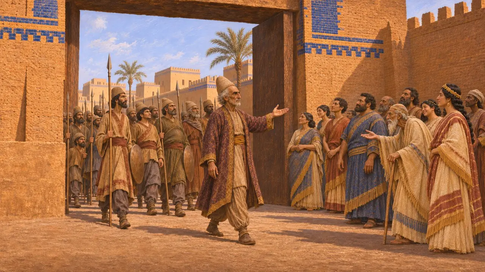
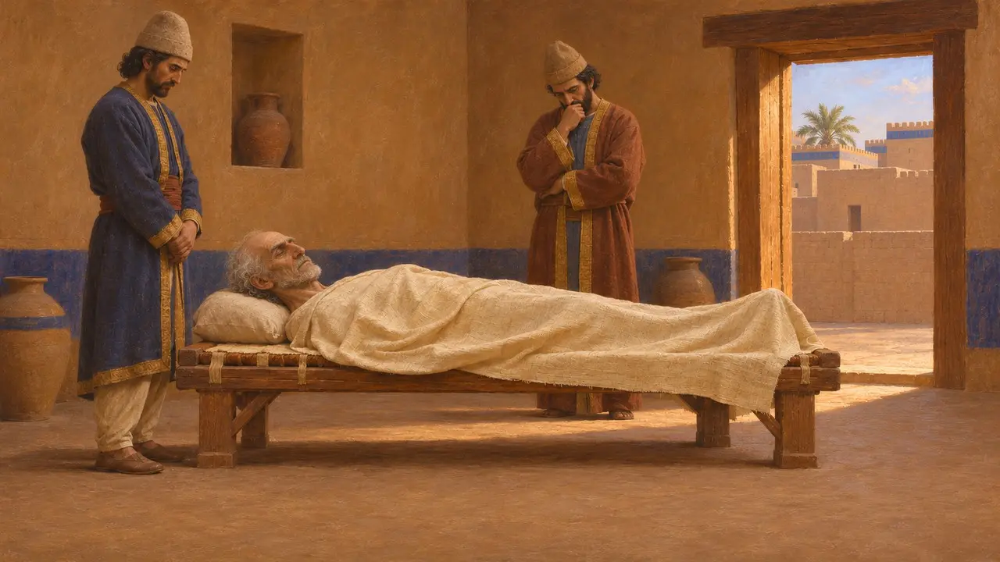
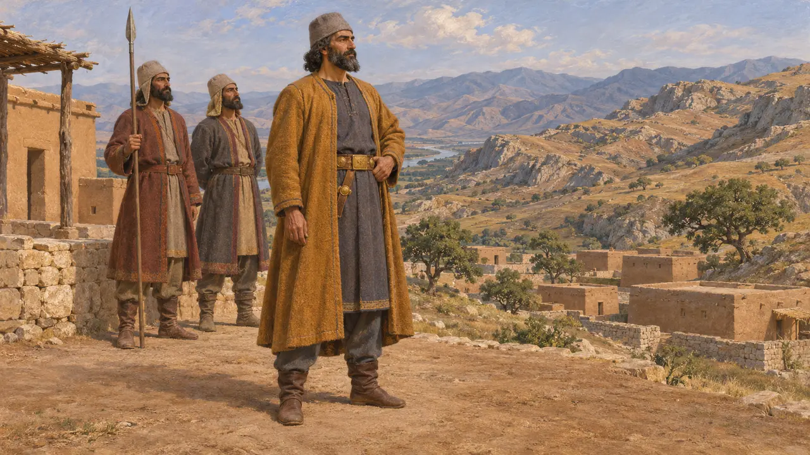
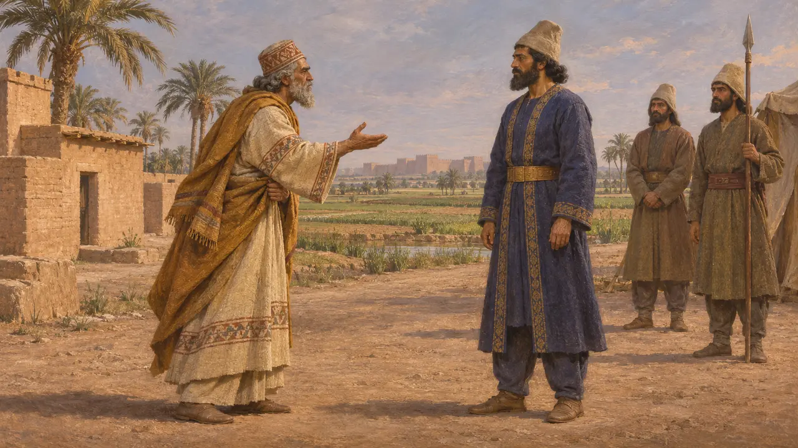
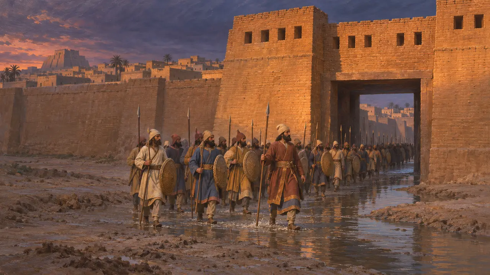

Угбару
Наместник Гутиума, взявший Вавилон для Кира в 539 г. до н. э.
Угбару упоминается в Хронике Набонида как правитель Гутия, чьи войска вошли в Вавилон без боя в октябре 539 г. до н. э. Затем в Хронике, по-видимому, записана его смерть несколькими неделями позже. Его личность остаётся предметом споров: греческие авторы его не называют, а Гобрий у Ксенофонта может быть тем же человеком.
В игре: Игра упоминает Угбару только в статьях о событиях, таких как падение Вавилона, и не даёт ему собственной механики. Она описывает его как правителя Гутиума, вошедшего в Вавилон от имени Кира.

Что говорит Хроника
Свидетельства эпохиХроника Набонида сообщает, что Угбару, правитель Гутия, и войско Кира вошли в Вавилон без боя шестнадцатого числа месяца ташриту. Набонид был взят в плен после возвращения в город. Сам Кир вступил в него третьего арахсамну, и, как говорится в тексте, он провозгласил городу мир.
Nabonidus Chronicle (ABC 7), column iii

Его смерть
Свидетельства эпохиВ записи Хроники за одиннадцатый день месяца арахсамну сказано, что умер наместник, и большинство учёных видят в нём Угбару. Табличка в этом месте повреждена, так что прочтение основано на толковании. О том, как он умер, текст не сообщает.
Nabonidus Chronicle (ABC 7), column iii

Кто был правителем Гутия
СпорныйГутий — старое название горной страны к востоку от Тигра. Историки расходятся во мнениях: был ли Угбару вавилонским чиновником, перешедшим на другую сторону, или полководцем, назначенным Киром. Хроника не разрешает этого вопроса.
A. Kuhrt, The Persian Empire, 2007

Угбару и Гобрий
СпорныйМногие исследователи отождествляют Угбару с Гобрием из «Киропедии» Ксенофонта, поскольку Гобрий — греческая форма персидского имени Гаубарува. У Ксенофонта он ассирийский вельможа, который обратился против своего царя и помог Киру. Другие считают, что это два разных человека, а книга Ксенофонта — сочинение нравственно-поучительное, а не простая история.
Xenophon, Cyropaedia

Греческие рассказы о падении
Античное свидетельствоГеродот описывает взятие Вавилона так: Евфрат отвели в сторону, и войска прошли по руслу реки; Угбару он нигде не называет. Ксенофонт рассказывает похожую историю об отводе реки и ночном нападении. В Хронике нет ни того, ни другого, и сказано, что город был взят без боя.
Herodotus 1.191
Источники
- Nabonidus Chronicle (ABC 7)
- Herodotus 1.191
- Xenophon, Cyropaedia
- P. Briant, From Cyrus to Alexander, 2002
- A. Kuhrt, The Persian Empire, 2007